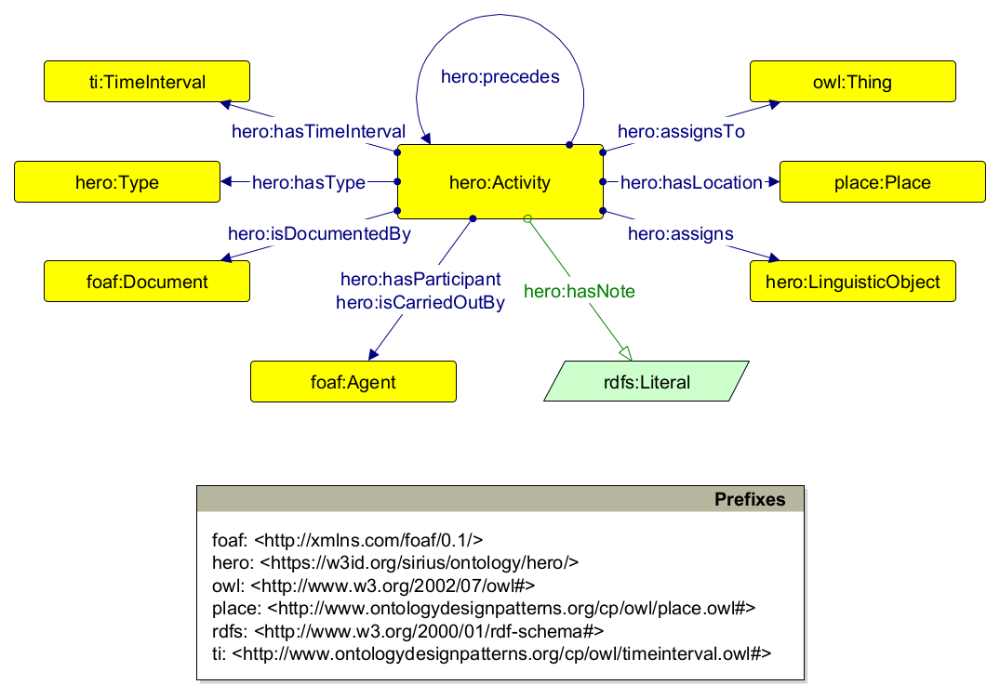
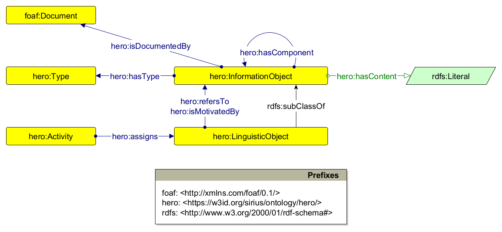

Heritage Risk Assessment Ontology (HeRO)
Release: 2023-11-30
- Modified on: 2024-04-30
- This version:
- https://w3id.org/sirius/ontology/hero/2.0.0/
- Latest version:
- https://w3id.org/sirius/ontology/hero/
- Previous version:
- https://w3id.org/sirius/ontology/hero/1.0.0/
- Revision:
- 2.0.0
- Issued on:
- 2023-11-30
- Authors:
- https://orcid.org/0000-0002-0799-1527
- Imported Ontologies:
- agentrole.owl
- basicplanexecution.owl
- classification.owl
- componency.owl
- intensionextension.owl
- objectrole.owl
- participation.owl
- partof.owl
- place.owl
- region.owl
- sequence.owl
- situation.owl
- timeinterval.owl
- cpannotationschema.owl
- Source:
- https://doi.org/10.6084/M9.FIGSHARE.3189769.V2
- https://www.canada.ca/en/conservation-institute/services/risk-management-heritage-collections/abc-method-risk-management-approach.html
- https://www.iccrom.org/sites/default/files/2017-12/risk_manual_2016-eng.pdf
- Download serialization:


- License:

- Visualization:

- Cite as:
- Barzaghi, S. (2023). Heritage Risk Assessment Ontology. https://w3id.org/sirius/ontology/hero.
- Incompatible with:
- https://w3id.org/sirius/ontology/hero/1.0.0/
- Vocabulary maintained at:
- https://github.com/sirius-org/hero
Abstract
The Heritage Risk Assessment Ontology (HeRO, https://w3id.org/sirius/ontology/hero) is an OWL 2 DL ontology for describing risk assessment activities related to heritage in a FAIR-compliant, machine-actionable format.Introduction
In recent decades, the role of cultural heritage in disaster management has been increasingly recognized as a fundamental facilitator for post-disaster recovery, development and resilience (Ravankhah et al. 2017) as well as fostering a sense of community and identity (Minguez Garcia 2020). However, it is challenging to put in place adequate risk management strategies against possible threats to heritage institutions and the artifacts they work to preserve, manage, and share with both academia and the general public. Obstacles within cultural heritage institutions like galleries, museums, libraries, and archives include methodological divergences between research communities (Bullock 2012), an inadequate knowledge of the assets and the inability to evaluate their worth from a non-market perspective (Taboroff 2000), lack of knowledge sharing, the need for better communication between different disciplines involved in heritage risk assessment, and the need to engage more effectively with local stakeholders (Durrent 2023) (Adger et al. 2013). Furthermore, with the emergence of digital technologies and their increasing use in the cultural heritage sector, there are also growing concerns about the preservation, sustainability, accessibility and usability of digital materials over time (McHugh et al. 2007) (Vermaaten et al. 2012).
Project CHANGES (Cultural Heritage Active Innovation For Next-Gen Sustainable Society), an EU-funded initiative that began in December 2022, serves as the operational framework for the research described in this document. In addition to integrating important social functions such as accessibility, inclusivity, critical thinking, participation, enjoyment and sustainability into the field of cultural heritage, CHANGES aims to increase public engagement and promote sustainable cultural heritage curation and management practices in accordance with the European Cultural Heritage guidelines. In particular, one of the research lines pursued within CHANGES is dedicated to develop and apply integrated methodologies, strategies and approaches to support the processes of historical understanding, conservation, restoration, monitoring, sustainable and participatory planning in multi-layered contexts of cultural heritage. The present work falls into this specific area of investigation. Specifically, the SIRIUS project, initiated by the University of Bologna's Department of Cultural Heritage, aims to streamline the process of assessing heritage-related risks and effectively communicate this information to the general public by creating localized guidelines for disaster risk management in the context of cultural, environmental, and digital heritage. These localized versions are then projected into a higher level of abstraction, where they become general guidelines that revolve around prevalent terminologies and methodologies able to describe most objects, contexts and situations related to risk heritage management.
This, however, poses a number of challenges. Indeed, risk assessment is a complex process that involves a number of different activities, ranging from examining the context surrounding the object being examined to identifying potential hazards threatening its integrity, to assessing their impact in terms of loss of value, developing treatment options, and so on. More generally, the concept of risk is inherently tethered with the notions of value, uncertainty, subjective interpretation and objective analysis (Sales et al. 2018), thus making its ontological status extremely difficult to deal with (Aven et al. 2011). In order to meet the requirements of the aforementioned projects, the formal representation ensure by the use of technologies such as ontologies (Uschold and Gruninger 1996) (Guarino et al. 2009) was deemed to be appropriate for describing the domain of heritage risk assessment in a way that facilitates the management, access, interoperability and reusability of data related to heritage risk to both the research community and the general public (Ding et al. 2007) (Nota et al. 2010).
A previous paper (Barzaghi 2023) addressed how to formulate a machine-readable representation of the risk assessment process as specified in the ABC method (Coelho et al. 2023), a risk assessment framework used to meet the scientific and communicative needs of SIRIUS. The result of this study was the first draft of the Heritage Risk Assessment Ontology (HeRO, https://w3id.org/sirius/ontology/hero/1.0.0/), an OWL 2 DL ontology for reppresenting machine-readable heritage risk assessment procedures. The study examined the process by which HeRO has been designed and developed. Then, it introduced the model proper, and showcased its application through an exemplary use case. Finally, it concluded by illustrating a series of indications for possible ways to enhance the model in the future. These included the need to enhance the model's adaptability to different contexts (e.g. other forms of heritage, including digital cultural heritage) and different risk assessment methodologies. After all, the first version of HeRO was explicitly focused on the ABC method, which - while quite used - is not the most widespread risk assessment methodology. Thus, HeRO suffered from employing a series of classes and properties tailored too tight to a single methodology and the tangible type of cultural heritage. This greatly limited the model's FAIRness, especially in terms of its reusability and interoperability, and thus its possibility to formally describe the heritage risk management domain and somehow align such description with other existing and widespread models, such as the CIDOC Conceptual Reference Model (Doerr 2005) and Ontology Design Patterns (ODPs) (Gangemi and Presutti 2009).
This document presents the latest iteration of HeRO, which involves a significant overhaul of its original framework. Its objective remains to describe risk assessment procedures within the cultural heritage sector in a format that is machine-readable. This updated version maintains a pattern-based approach, but now transforms the entire ontology into a generalized pattern for representing assessments as activities that attribute scientific assertions about conceptual categories to any type of examinable entity, whether physical or conceptual. Notably, this pattern aligns seamlessly with CIDOC CRM, the predominant ontology in the heritage domain, and is explicitly grounded in the FAIR principles, particularly those pertaining to interoperability and reusability.
Heritage Risk Assessment Ontology (HeRO): Overview back to ToC
This ontology has the following classes and properties.Classes
Object Properties
- assigns
- assigns to
- carries out
- documents
- expresses
- follows
- has component
- has location
- has participant
- has time interval
- has type
- is assigned by
- is attributed by of
- is carried out by
- is component of
- is documented by
- is location of
- is motivated by
- is participant in
- is referred to by
- is time interval of
- precedes
Data Properties
Description
The Heritage Risk Assessment Ontology (HeRO, https://w3id.org/sirius/ontology/hero) is a OWL 2 DL ontology for describing risk assessment activities in the cultural and environmental heritage domain in a machine-actionable format. It was developed by using a slightly modified version of the Simplified Agile Methodology for Ontology Development (SAMOD).
Both HeRO and its documentation are living artefacts that have been and still are being drafted in the context of the Project CHANGES ("Cultural Heritage Active Innovation For Next-Gen Sustainable Society"), an EU-funded project that aims at increasing, in the Italian context, the curation, and management of cultural heritage artefacts in all forms, expanding the involvement of the general public, making the exhibition potential more sustainable, and including crucial social functions (accessibility, inclusiveness, critical thinking, participation, enjoyment, sustainability) into the cultural heritage environment.
Currently, HeRO is able to describe the following entities:
- Assessment activities and their provenance information (who carried out or participated in an activity, when, where, what was done, and how);
- Linguistic objects (scientific observations, statements, assertions, speculations, etc.), assigned to objects being examined during assessment activites;
- Information objects (concepts, classifications, categories, etc.), referred to by the linguistic objects and representing the aspects and attributes related in some way to the objects being examined during assessment activities.
The current version of HeRO reuses a series of Ontology Design Patterns (ODPs) by defining its own set of classes and properties and conceptualizing them as subclasses and subproperties of the reused ODPs' entities. More specifically, HeRO reuses the following models:
- Basic Plan Execution ODP
- Componency ODP
- Friend Of A Friend
- Intension Extension ODP
- Object Role ODP
- Participation ODP
- Place ODP
- Provenance Ontology
- Sequence ODP
- Situation ODP
- Dublin Core Terms
- Time Indexed Situation ODP
- Time Interval ODP
A full version of HeRO is available at https://w3id.org/sirius/ontology/hero.
The next subsections provide a quick overview of all the entities defined, some exemple of usage, and some of the queries that HeRO can answer.
Assessment activities
In HeRO, the concept of assessment activity represents the core abstraction around which the rest of the ontology is built. As shown in the following diagram, an assessment activity is a first-class object related to a series of other entities that populate and signify its context.

As previously mentioned, HeRO draws constructs from ODPs and uses them as super classes and super properties of its own entities to accurately represent the processes outlined by a risk assessment endeavor, as well as the concepts and relations implicitly expressed in such processes. In particular, an assessment activity (hero:Activity) is a situated action that involves gaining and producing scientific knowledge about some entity being observed by assigning to that entity a series of assertions referring to concepts used to make the assessment. As a result, it has been modelled as a subclass of tisit:TimeIndexedSituation and planex:Action that assigns to a object (owl:Thing) a series of "linguistic objects" (hero:LinguisticObject) representing scientific observations, statements or assertions related to that object. Multiple activities can be sequentialized one after the other with hero:precedes. In addition, an assessment activity is enriched with a packet of additional information covering its type (hero:Type), its temporal horizon (ti:TimeInterval), its geographic context (place:Place), the agents involved in its realization (foaf:Agent), the material documenting how the activity was carried out and based on what sources (foaf:Document), and its textual description (hero:hasNote).
Scientific assertions and concepts
As illustrated in the previous section, an assessment activity assigns a series of assertions to the objects being examined. As shown in the following diagram, an assertion (hero:LinguisticObject) is modelled as a subclass of hero:InformationObject, thus incorporating the idea of an assertion as a piece of information, independently from how it is concretely realized. In turn, an assertion refers to some qualitative, quantitative or interpretative conceptual object (hero:InformationObject), modelled as a subclass of intensionextension:InformationObject, that carries some information that is deemed relevant in the context of risk assessment.

In addition to referring to some concept, an assertion can be classified according to external categorization schemes (hero:Type), can be documented by some document (foaf:Document), can be also motivated by other concepts referred to in other assertions, and expresses some kind of content or value (hero:hasContent). A concept, while also being characterized by a type (hero:Type) and a content (hero:hasContent), can be composed of other conceptual objects (hero:hasComponent).
Examples of use
HeRO can be used for modelling scenarios related to heritage risk assessment. Note that, due to the wide scope of the classes and properties it uses, the way it has been modelled, and its dependency on external vocabularies for typification, HeRO can be used to model any situation involving assigning scientific assertions expressing some kind of conceptual content to an object in order to examine it.
In the following subsections we introduce some scenarios pertaining to the cultural heritage risk domain, and we accompany them with exemplar instantiations.
The prefixes that are used in all the examples provided below are defined as follows:
@prefix : <https://w3id.org/sirius/ontology/hero/data/example/> .
@prefix aat: <http://vocab.getty.edu/page/aat/> .
@prefix foaf: <http://xmlns.com/foaf/0.1/> .
@prefix freq: <http://publications.europa.eu/resource/authority/frequency/> .
@prefix hero: <https://w3id.org/sirius/ontology/hero/> .
@prefix owl: <http://www.w3.org/2002/07/owl#> .
@prefix place: <http://www.ontologydesignpatterns.org/cp/owl/place.owl#> .
@prefix rdfs: <http://www.w3.org/2000/01/rdf-schema#> .
@prefix ti: <http://www.ontologydesignpatterns.org/cp/owl/timeinterval.owl#> .
@prefix wd: <http://www.wikidata.org/entity/> .
Scenario 1
An assessment activity :assessment-activity-01 consisting in the context description of a CHO :baptistery, is taking place in Ravenna, is being carried out by the expert Sara Fiorentino (with the involvement of other stakeholders, such as Comune di Ravenna, Soprintendenza di Ravenna and Università di Bologna), in the time interval starting from 2024-02-01 to 2024-03-01, and is being annotated with the following text: "Octagonal building with sloping roof, featuring four apsidioles corresponding to the cardinal points (partially buried). The mosaic decoration is preserved only on the dome, creating a striking contrast with the rough surface of exposed bricks in the lower part. The mosaic depicts in the center the baptism of Christ in the River Jordan, surrounded by a band with the twelve apostles parading in two rows, meeting at the throne of the etimasia, symbol of the invisible presence of Christ."
It is composed of six statements, each assigned to the CHO in question:
:observation-01, which is a descriptive statement referring to the physical properties of the CHO (:concept-01) with the following content: "The Baptistery is externally visible on the N, NW, and NE sides. The west side overlooks the gardens of a private residence, while the south, SW, and SE sides overlook the garden of the Department of Cultural Heritage (University of Bologna).":observation-02, which is a descriptive statement referring to the social environment surrounding the CHO (:concept-02) with the following content: "Monumental site in an urban area, open to tourists (with prior admission ticket). The small square where the building is located suffers from a bad reputation, being labeled as a 'socially risky area and a neglected place' (reported incident of an abandoned bed frame found at night in the Baptistery's trench, 11.07.2006, Source: Zaccarini, 2015). Despite the establishment of regulations in 2012 restricting vehicle access to the square, transit and parking for loading/unloading goods are still permitted.":observation-03, which is a descriptive statement referring to the political environment surrounding the CHO (:concept-03) with the following content: "The monument is often a subject of debate among various political parties and the Municipality of Ravenna.". It is documented by:document-01:observation-04, which is a descriptive statement referring to the legal status of the CHO (:concept-04) with the following content: "Owned by the State Property / Ministry of Culture. Since 1996, it has been part of the UNESCO World Heritage Sites list in Italy ('Early Christian Monuments of Ravenna').":observation-05, which is a descriptive statement referring to the administration of the CHO (:concept-05) with the following content: "Since December 2019, it has been managed by the Regional Directorate of Museums of Emilia Romagna, located in Ravenna.":observation-06, which is a descriptive statement referring to the economic environment surrounding the CHO (:concept-06) with the following content: "The Law No. 77 of February 20, 2006, establishes that UNESCO sites are excellences of the Italian cultural, landscape, and natural heritage, fundamental elements of our country's representation at the international level, and states that interventions on them have priority even in terms of the allocation of financial resources."
:assessment-activity-01 a hero:Activity ;
hero:assigns :observation-01 ,
:observation-02 ,
:observation-03 ,
:observation-04 ,
:observation-05 ,
:observation-06 ;
hero:assignsTo :baptistery ;
hero:hasLocation :ravenna ;
hero:hasNote '''Octagonal building with sloping roof, featuring four apsidioles corresponding
to the cardinal points (partially buried). The mosaic decoration is preserved only on the
dome, creating a striking contrast with the rough surface of exposed bricks in the lower
part. The mosaic depicts in the center the baptism of Christ in the River Jordan,
surrounded by a band with the twelve apostles parading in two rows, meeting at the throne
of the etimasia, symbol of the invisible presence of Christ.'''@en ;
hero:hasParticipant :comune-di-ravenna ,
:sara-fiorentino ,
:soprintendenza-di-ravenna ,
:universita-di-bologna ;
hero:hasTimeInterval :time-interval-01 ;
hero:hasType wd:Q1137655 ;
hero:isCarriedOutBy :sara-fiorentino .
:concept-01 a hero:InformationObject ;
hero:hasType wd:Q4373292 .
:concept-02 a hero:InformationObject ;
hero:hasType wd:Q8425 .
:concept-03 a hero:InformationObject ;
hero:hasType wd:Q7163 .
:concept-04 a hero:InformationObject ;
hero:hasType wd:Q2628882 .
:concept-05 a hero:InformationObject ;
hero:hasType wd:Q5283295 .
:concept-06 a hero:InformationObject ;
hero:hasType wd:Q8134 .
:document-01 a foaf:Document .
:observation-01 a hero:LinguisticObject ;
hero:hasContent '''The Baptistery is externally visible on the N, NW, and NE sides. The west
side overlooks the gardens of a private residence, while the south, SW, and SE sides
overlook the garden of the Department of Cultural Heritage (University of Bologna).'''@en ;
hero:hasType aat:300435416 ;
hero:refersTo :concept-01 .
:observation-02 a hero:LinguisticObject ;
hero:hasContent '''Monumental site in an urban area, open to tourists (with prior admission
ticket). The small square where the building is located suffers from a bad reputation, being
labeled as a 'socially risky area and a neglected place' (reported incident of an abandoned
bed frame found at night in the Baptistery's trench, 11.07.2006, Source: Zaccarini, 2015).
Despite the establishment of regulations in 2012 restricting vehicle access to the square,
transit and parking for loading/unloading goods are still permitted.'''@en ;
hero:hasType aat:300435416 ;
hero:refersTo :concept-02 .
:observation-03 a hero:LinguisticObject ;
hero:hasContent '''The monument is often a subject of debate among various political parties
and the Municipality of Ravenna.'''@en ;
hero:hasType aat:300435416 ;
hero:isDocumentedBy :document-01 ;
hero:refersTo :concept-03 .
:observation-04 a hero:LinguisticObject ;
hero:hasContent '''Owned by the State Property / Ministry of Culture. Since 1996, it has been
part of the UNESCO World Heritage Sites list in Italy ('Early Christian Monuments of
Ravenna').'''@en ;
hero:hasType aat:300435416 ;
hero:refersTo :concept-04 .
:observation-05 a hero:LinguisticObject ;
hero:hasContent '''Since December 2019, it has been managed by the Regional Directorate of
Museums of Emilia Romagna, located in Ravenna.'''@en ;
hero:hasType aat:300435416 ;
hero:refersTo :concept-05 .
:observation-06 a hero:LinguisticObject ;
hero:hasContent '''The Law No. 77 of February 20, 2006, establishes that UNESCO sites are
excellences of the Italian cultural, landscape, and natural heritage, fundamental elements
of our country's representation at the international level, and states that interventions on
them have priority even in terms of the allocation of financial resources.'''@en ;
hero:hasType aat:300435416 ;
hero:refersTo :concept-06 .
:time-interval-01 a ti:TimeInterval ;
ti:hasIntervalEndDate "2024-03-01T23:59:59Z"^^xsd:dateTime ;
ti:hasIntervalStartDate "2024-02-01T00:00:00Z"^^xsd:dateTime .
:baptistery a owl:Thing .
:ravenna a place:Place .
:sara-fiorentino a foaf:Agent .
:soprintendenza-di-ravenna a foaf:Agent .
:universita-di-bologna a foaf:Agent .
Scenario 2
Two assessment activities consisting in the identification of risks related to the CHO :baptistery, are taking place in Ravenna and are being carried out by the expert Sara Fiorentino, in the time interval starting from 2024-03-01 to 2024-04-01. They are:
assessment-activity-03, annotated with the text "Floods and heavy rains induce erosion of the baptistery walls". It is composed of three statements assigned to the CHO::observation-10, which is a condition description referring to the potential damage of water-related hazards (:concept-10);:observation-11, which is a dimensions description referring to the annual occurrence of the potential hazardous event (:concept-11);:observation-12, which is a location description referring to the region surrounding the CHO as the location of occurrence of the potential hazardous event (:concept-12).
assessment-activity-04, which is composed of three statements assigned to the CHO::observation-13, which is a condition description referring to the potential damage of fire-related hazards (:concept-13);:observation-14, which is a dimensions description referring to the centennial occurrence of the potential hazardous event (:concept-14);:observation-15, which is a location description referring to the building in which the CHO is situated as the location of occurrence of the potential hazardous event (:concept-15).
:assessment-activity-03 a hero:Activity ;
hero:assigns :observation-10 ,
:observation-11 ,
:observation-12 ;
hero:assignsTo :baptistery ;
hero:hasLocation :ravenna ;
hero:hasNote "Floods and heavy rains induce erosion of the baptistery walls."@en ;
hero:hasTimeInterval :time-interval-02 ;
hero:hasType wd:Q5687675 ;
hero:isCarriedOutBy :sara-fiorentino .
:assessment-activity-04 a hero:Activity ;
hero:assigns :observation-13 ,
:observation-14 ,
:observation-15 ;
hero:assignsTo :baptistery ;
hero:hasLocation :ravenna ;
hero:hasTimeInterval :time-interval-02 ;
hero:hasType wd:Q5687675 ;
hero:isCarriedOutBy :sara-fiorentino .
:concept-10 a hero:InformationObject ;
hero:hasType wd:Q19289049 .
:concept-11 a hero:InformationObject ;
hero:hasType freq:ANNUAL .
:concept-12 a hero:InformationObject ;
hero:hasType wd:Q82794 .
:concept-13 a hero:InformationObject ;
hero:hasType wd:Q56497979 .
:concept-14 a hero:InformationObject ;
hero:hasType freq:OTHER .
:concept-15 a hero:InformationObject ;
hero:hasType wd:Q41176 .
:observation-10 a hero:LinguisticObject ;
hero:hasType aat:300435425 ;
hero:refersTo :concept-10 .
:observation-11 a hero:LinguisticObject ;
hero:hasType aat:300435430 ;
hero:refersTo :concept-11 .
:observation-12 a hero:LinguisticObject ;
hero:hasType aat:300435449 ;
hero:refersTo :concept-12 .
:observation-13 a hero:LinguisticObject ;
hero:hasType aat:300435425 ;
hero:refersTo :concept-13 .
:observation-14 a hero:LinguisticObject ;
hero:hasType aat:300435430 ;
hero:refersTo :concept-14 .
:observation-15 a hero:LinguisticObject ;
hero:hasType aat:300435449 ;
hero:refersTo :concept-15 .
:time-interval-02 a ti:TimeInterval ;
ti:hasIntervalEndDate "2024-04-01T23:59:59Z"^^xsd:dateTime ;
ti:hasIntervalStartDate "2024-03-01T00:00:00Z"^^xsd:dateTime .
:baptistery a owl:Thing .
:ravenna a place:Place .
:sara-fiorentino a foaf:Agent .
Scenario 3
An assessment activity :assessment-activity-05, consisting in the analysis of risks related to a CHO :baptistery, is taking place in Ravenna, is documented in the document :document-03 and is being carried out by the expert Sara Fiorentino, in the time interval starting from 2024-04-01 to 2024-05-01, continuing :assessment-activity-03. It is annotated with the following text: "A flood event is expected in the baptistery approximately once every 25 years, most likely affecting the whole heritage asset value per event, resulting in a partial loss." It is composed of four statements, each assigned to the CHO in question:
:observation-16, which is a dimensions description referring to the frequency of the risk occurrence (:concept-16). In turn, the frequency is composed of three other concepts:- low estimate (
:concept-16a), with a value of "3.0"; - probable estimate (
:concept-16b), with a value of "3.5"; - high estimate (
:concept-16c), with a value of "4.0".
- low estimate (
:observation-17, which is a dimensions description referring to the fractional value loss determined by the risk occurrence (:concept-17). In turn, the fractional value loss is composed of three other concepts:- low estimate (
:concept-17a), with a value of "4.5"; - probable estimate (
:concept-17b), with a value of "5.0"; - high estimate (
:concept-17c), with a value of "5.0".
- low estimate (
:observation-18, , which is a dimensions description referring to the exposure determined by the risk occurrence (:concept-18). In turn, the exposure is composed of three other concepts:- low estimate (
:concept-18a), with a value of "1.5"; - probable estimate (
:concept-18b), with a value of "2.0"; - high estimate (
:concept-18c), with a value of "2.5".
- low estimate (
:observation-19, , which is a dimensions description referring to the magnitude of the risk occurrence (:concept-19). In turn, the magnitude is composed of three other concepts:- low estimate (
:concept-19a), with a value of "9.0"; - probable estimate (
:concept-19b), with a value of "10.5"; - high estimate (
:concept-19c), with a value of "11.5".
- low estimate (
Another assessment activity :assessment-activity-06, consisting in the analysis of risks related to :baptistery, is taking place in Ravenna, is documented in the document :document-03 and is being carried out by the expert Sara Fiorentino, in the time interval starting from 2024-04-01 to 2024-05-01, continuing :assessment-activity-04. It is annotated with the following text: "A large fire event is expected in the museum approximately once every 300 years, with the fire affecting all or most of the heritage asset value, causing total or almost total loss of value in each affected item." It consists of four statements:
:observation-20, which is a dimensions description referring to the frequency of the risk occurrence (:concept-20). In turn, the frequency is composed of three other concepts:- low estimate (
:concept-20a), with a value of "2.0"; - probable estimate (
:concept-20b), with a value of "2.5"; - high estimate (
:concept-20c), with a value of "3.0".
- low estimate (
:observation-21, which is a dimensions description referring to the fractional value loss determined by the risk occurrence (:concept-21). In turn, the fractional value loss is composed of three other concepts:- low estimate (
:concept-21a), with a value of "4.5"; - probable estimate (
:concept-21b), with a value of "5.0"; - high estimate (
:concept-21c), with a value of "5.0".
- low estimate (
:observation-22, which is a dimensions description referring to the exposure determined by the risk occurrence (:concept-22). In turn, the exposure is composed of three other concepts:- low estimate (
:concept-22a), with a value of "4.5"; - probable estimate (
:concept-22b), with a value of "5.0"; - high estimate (
:concept-22c), with a value of "5.0".
- low estimate (
:observation-23, which is a dimensions description referring to the magnitude of the risk occurrence (:concept-23). In turn, the magnitude is composed of three other concepts:- low estimate (
:concept-23a), with a value of "11.0"; - probable estimate (
:concept-23b), with a value of "12.5"; - high estimate (
:concept-23c), with a value of "13.0".
- low estimate (
:assessment-activity-05 a hero:Activity ;
hero:assigns :observation-16 ,
:observation-17 ,
:observation-18 ,
:observation-19 ;
hero:assignsTo :baptistery ;
hero:hasLocation :ravenna ;
hero:hasNote '''A flood event is expected in the baptistery approximately once every 25
years, most likely affecting the whole heritage asset value per event, resulting in a partial loss.'''@en ;
hero:hasTimeInterval :time-interval-03 ;
hero:hasType wd:Q217602 ;
hero:isCarriedOutBy :sara-fiorentino ;
hero:isDocumentedBy :document-03 ;
hero:precedes :assessment-activity-03 .
:document-03 a foaf:Document .
:assessment-activity-06 a hero:Activity ;
hero:assigns :observation-20 ,
:observation-21 ,
:observation-22 ,
:observation-23 ;
hero:assignsTo :baptistery ;
hero:hasLocation :ravenna ;
hero:hasNote '''A large fire event is expected in the museum approximately once every 300
years, with the fire affecting all or most of the heritage asset value, causing total or
almost total loss of value in each affected item.'''@en ;
hero:hasTimeInterval :time-interval-03 ;
hero:hasType wd:Q217602 ;
hero:isCarriedOutBy :sara-fiorentino ;
hero:isDocumentedBy :document-03 ;
hero:precedes :assessment-activity-04 .
:concept-16 a hero:InformationObject ;
hero:hasComponent :concept-16a ,
:concept-16b ,
:concept-16c ;
hero:hasType wd:Q11652 .
:concept-16a a hero:InformationObject ;
hero:hasContent "3.0"^^rdfs:Literal ;
hero:hasType wd:Q10585806 .
:concept-16b a hero:InformationObject ;
hero:hasContent "3.5"^^rdfs:Literal ;
hero:hasType wd:Q226995 .
:concept-16c a hero:InformationObject ;
hero:hasContent "4.0"^^rdfs:Literal ;
hero:hasType wd:Q10578722 .
:concept-17 a hero:InformationObject ;
hero:hasComponent :concept-17a ,
:concept-17b ,
:concept-17c ;
hero:hasType wd:Q7523953 .
:concept-17a a hero:InformationObject ;
hero:hasContent "4.5"^^rdfs:Literal ;
hero:hasType wd:Q10585806 .
:concept-17b a hero:InformationObject ;
hero:hasContent "5.0"^^rdfs:Literal ;
hero:hasType wd:Q226995 .
:concept-17c a hero:InformationObject ;
hero:hasContent "5.0"^^rdfs:Literal ;
hero:hasType wd:Q10578722 .
:concept-18 a hero:InformationObject ;
hero:hasComponent :concept-18a ,
:concept-18b ,
:concept-18c ;
hero:hasType wd:Q107642367 .
:concept-18a a hero:InformationObject ;
hero:hasContent "1.5"^^rdfs:Literal ;
hero:hasType wd:Q10585806 .
:concept-18b a hero:InformationObject ;
hero:hasContent "2.0"^^rdfs:Literal ;
hero:hasType wd:Q226995 .
:concept-18c a hero:InformationObject ;
hero:hasContent "2.5"^^rdfs:Literal ;
hero:hasType wd:Q10578722 .
:concept-19 a hero:InformationObject ;
hero:hasComponent :concept-19a ,
:concept-19b ,
:concept-19c ;
hero:hasType wd:Q2154759 .
:concept-23 a hero:InformationObject ;
hero:hasComponent :concept-23a ,
:concept-23b ,
:concept-23c ;
hero:hasType wd:Q2154759 .
:concept-19a a hero:InformationObject ;
hero:hasContent "9.0"^^rdfs:Literal ;
hero:hasType wd:Q10585806 .
:concept-19b a hero:InformationObject ;
hero:hasContent "10.5"^^rdfs:Literal ;
hero:hasType wd:Q226995 .
:concept-19c a hero:InformationObject ;
hero:hasContent "11.5"^^rdfs:Literal ;
hero:hasType wd:Q10578722 .
:concept-20 a hero:InformationObject ;
hero:hasComponent :concept-20a ,
:concept-20b ,
:concept-20c ;
hero:hasType wd:Q11652 .
:concept-20a a hero:InformationObject ;
hero:hasContent "2.0"^^rdfs:Literal ;
hero:hasType wd:Q10585806 .
:concept-20b a hero:InformationObject ;
hero:hasContent "2.5"^^rdfs:Literal ;
hero:hasType wd:Q226995 .
:concept-20c a hero:InformationObject ;
hero:hasContent "3.0"^^rdfs:Literal ;
hero:hasType wd:Q10578722 .
:concept-21 a hero:InformationObject ;
hero:hasComponent :concept-21a ,
:concept-21b ,
:concept-21c ;
hero:hasType wd:Q7523953 .
:concept-21a a hero:InformationObject ;
hero:hasContent "4.5"^^rdfs:Literal ;
hero:hasType wd:Q10585806 .
:concept-21b a hero:InformationObject ;
hero:hasContent "5.0"^^rdfs:Literal ;
hero:hasType wd:Q226995 .
:concept-21c a hero:InformationObject ;
hero:hasContent "5.0"^^rdfs:Literal ;
hero:hasType wd:Q10578722 .
:concept-22 a hero:InformationObject ;
hero:hasComponent :concept-22a ,
:concept-22b ,
:concept-22c ;
hero:hasType wd:Q107642367 .
:concept-22a a hero:InformationObject ;
hero:hasContent "4.5"^^rdfs:Literal ;
hero:hasType wd:Q10585806 .
:concept-22b a hero:InformationObject ;
hero:hasContent "5.0"^^rdfs:Literal ;
hero:hasType wd:Q226995 .
:concept-22c a hero:InformationObject ;
hero:hasContent "5.0"^^rdfs:Literal ;
hero:hasType wd:Q10578722 .
:concept-23a a hero:InformationObject ;
hero:hasContent "11.0"^^rdfs:Literal ;
hero:hasType wd:Q10585806 .
:concept-23b a hero:InformationObject ;
hero:hasContent "12.5"^^rdfs:Literal ;
hero:hasType wd:Q226995 .
:concept-23c a hero:InformationObject ;
hero:hasContent "13.0"^^rdfs:Literal ;
hero:hasType wd:Q10578722 .
:time-interval-03 a ti:TimeInterval ;
ti:hasIntervalEndDate "2024-05-01T23:59:59Z"^^xsd:dateTime ;
ti:hasIntervalStartDate "2024-04-01T00:00:00Z"^^xsd:dateTime .
:baptistery a owl:Thing .
:ravenna a place:Place .
:sara-fiorentino a foaf:Agent .
Scenario 4
An assessment activity :assessment-activity-07 consisting in the evaluation of risks related to a CHO :baptistery, is taking place in Ravenna and is being carried out by the expert Sara Fiorentino, in the time interval starting from 2024-05-01 to 2024-06-01, continuing :assessment-activity-05. It is annotated with the following text: "The risk of flood (MR = 10.5) has a high priority. It is 100 times smaller than the fire risk. The uncertainty that has been measured amounts to a value equal to 2.5. A risk of this magnitude is equivalent to losing about 0.3% of the heritage asset value every 100 years (or 3% per millennium). The museum direction considers this level of risk as just beyond acceptable, since as a condition the value of MR is slightly higher than 10 and the value of uncertainty is higher than 2." It consists of one statement assigned to the CHO in question:
:observation-24, which is a diagnosis motivated by:parameter-19and referring to a high level of priority(:concept-24).
Another assessment activity :assessment-activity-08 consisting in the evaluation of risks related to the CHO :baptistery is taking place in Ravenna and is being carried out by the expert Sara Fiorentino, in the time interval starting from 2024-05-01 to 2024-06-01, following :assessment-activity-06. It is annotated with the following text: "The risk of a large fire affecting the baptistery and its contents (MR = 12.5) has an extreme priority. The uncertainty that has been measured amounts to a value equal to 1.0. A risk of this magnitude is equivalent to losing about 3% of the heritage asset value every 10 years (or 30% per century, or 100% in about 300 years). The museum direction considers this level of risk as ‘not acceptable’, since as a condition the value of MR is higher than 10 and the value of uncertainty is lower than 2." It consists of one statement assigned to the CHO in question:
:observation-26, which is a diagnosis motivated by:parameter-23and referring to a extreme level of priority (:concept-26).
:assessment-activity-07 a hero:Activity ;
hero:assigns :observation-24 ;
hero:assignsTo :baptistery ;
hero:hasLocation :ravenna ;
hero:hasNote '''The risk of flood (MR = 10.5) has a high priority. It is 100 times smaller
than the fire risk. The uncertainty that has been measured amounts to a value equal to 2.5.
A risk of this magnitude is equivalent to losing about 0.3% of the heritage asset value
every 100 years (or 3% per millennium). The museum direction considers this level of risk as
just beyond acceptable, since as a condition the value of MR is slightly higher than 10 and
the value of uncertainty is higher than 2.'''@en ;
hero:hasTimeInterval :time-interval-04 ;
hero:hasType wd:Q1379672 ;
hero:isCarriedOutBy :sara-fiorentino ;
hero:precedes :assessment-activity-05 .
:assessment-activity-08 a hero:Activity ;
hero:assigns :observation-26 ;
hero:assignsTo :baptistery ;
hero:hasLocation :ravenna ;
hero:hasNote '''The risk of a large fire affecting the baptistery and its contents (MR = 12.5)
has an extreme priority. The uncertainty that has been measured amounts to a value equal to
1.0. A risk of this magnitude is equivalent to losing about 3% of the heritage asset value
every 10 years (or 30% per century, or 100% in about 300 years). The museum direction
considers this level of risk as ‘not acceptable’, since as a condition the value of MR is
higher than 10 and the value of uncertainty is lower than 2.'''@en ;
hero:hasTimeInterval :time-interval-04 ;
hero:hasType wd:Q1379672 ;
hero:isCarriedOutBy :sara-fiorentino ;
hero:precedes :assessment-activity-06 .
:concept-24 a hero:InformationObject ;
hero:hasType wd:Q125584111 .
:concept-26 a hero:InformationObject ;
hero:hasType wd:Q2154759 .
:observation-24 a hero:LinguisticObject ;
hero:hasType aat:300438433 ;
hero:isMotivatedBy :concept-19 ;
hero:refersTo :concept-24 .
:observation-26 a hero:LinguisticObject ;
hero:hasType aat:300438433 ;
hero:isMotivatedBy :concept-23 ;
hero:refersTo :concept-26 .
:time-interval-04 a ti:TimeInterval ;
ti:hasIntervalEndDate "2024-06-01T23:59:59Z"^^xsd:dateTime ;
ti:hasIntervalStartDate "2024-05-01T00:00:00Z"^^xsd:dateTime .
:baptistery a owl:Thing .
:ravenna a place:Place .
:sara-fiorentino a foaf:Agent .
Scenario 5
An assessment activity :assessment-activity-09 consisting in the treatment of risks related to a CHO :baptistery, is taking place in Ravenna and is being carried out by the expert Sara Fiorentino, in the time interval starting from 2024-06-01 to 2024-07-01, following :assessment-activity-07. It is annotated with the following text: "One possible action to protect a baptistery from water damage could be to install a waterproof membrane or coating on the exterior surfaces. This would help prevent water infiltration and damage to the structure. Additionally, regular maintenance such as inspecting for cracks or leaks and repairing them promptly can help mitigate water damage over time". It consists of three statements, each assigned to the CHO in question:
:observation-29, which is a plan description referring to a blocking action to try managing the described risks (:concept-29);:observation-30, which is a budget description referring to a capital cost (:concept-30) to implement such action, amounting to "3200" euros.:observation-31, which is a budget description referring to a maintenance cost (:concept-31) to implement such action, amounting to "120" euros.
Another assessment activity :assessment-activity-10 consisting in the treatment of risks related to a heritage asset :baptistery, is taking place in Ravenna and is being carried out by the expert Sara Fiorentino, in the time interval starting from 2024-06-01 to 2024-07-01, following :assessment-activity-07. It is annotated with the following text: "Use fire-resistant materials: Consider using fire-resistant coatings, fire-rated doors, and fireproof insulation to minimize fire damage." It consists of three statements, each assigned to the CHO in question:
:observation-32, which is a plan description referring to a blocking action to try managing the described risks (:concept-32);:observation-33, which is a budget description referring to a capital cost (:concept-33) amounting to "5000" euros;:observation-34, which is a budget description referring to a maintenance cost (:concept-34), amounting to "375" euros per month.
:assessment-activity-09 a hero:Activity ;
hero:assigns :observation-29 ,
:observation-30 ,
:observation-31 ;
hero:assignsTo :baptistery ;
hero:hasLocation :ravenna ;
hero:hasNote '''One possible action to protect a baptistery from water damage could be to
install a waterproof membrane or coating on the exterior surfaces. This would help prevent
water infiltration and damage to the structure. Additionally, regular maintenance such as
inspecting for cracks or leaks and repairing them promptly can help mitigate water damage
over time.'''@en ;
hero:hasTimeInterval :time-interval-05 ;
hero:hasType wd:Q2251595 ;
hero:isCarriedOutBy :sara-fiorentino ;
hero:precedes :assessment-activity-07 .
:assessment-activity-10 a hero:Activity ;
hero:assigns :observation-32 ,
:observation-33 ,
:observation-34 ;
hero:assignsTo :baptistery ;
hero:hasLocation :ravenna ;
hero:hasNote '''Use fire-resistant materials: Consider using fire-resistant coatings,
fire-rated doors, and fireproof insulation to minimize fire damage.'''@en ;
hero:hasTimeInterval :time-interval-05 ;
hero:hasType wd:Q2251595 ;
hero:isCarriedOutBy :sara-fiorentino ;
hero:precedes :assessment-activity-08 .
:concept-29 a hero:InformationObject ;
hero:hasType wd:Q2956685 .
:concept-30 a hero:InformationObject ;
hero:hasContent "3200"^^rdfs:Literal ;
hero:hasType wd:Q302208 .
:concept-31 a hero:InformationObject ;
hero:hasContent "120"^^rdfs:Literal ;
hero:hasType wd:Q831940 .
:concept-32 a hero:InformationObject ;
hero:hasType wd:Q2956685 .
:concept-33 a hero:InformationObject ;
hero:hasContent "5000"^^rdfs:Literal ;
hero:hasType wd:Q302208 .
:concept-34 a hero:InformationObject ;
hero:hasContent "375"^^rdfs:Literal ;
hero:hasType wd:Q831940 .
:observation-24 a hero:LinguisticObject ;
hero:hasType aat:300438433 ;
hero:isMotivatedBy :concept-19 ;
hero:refersTo :concept-24 .
:observation-26 a hero:LinguisticObject ;
hero:hasType aat:300438433 ;
hero:isMotivatedBy :concept-23 ;
hero:refersTo :concept-26 .
:observation-29 a hero:LinguisticObject ;
hero:hasType wd:Q1371819 ;
hero:refersTo :concept-29 .
:observation-30 a hero:LinguisticObject ;
hero:hasType aat:300027514 ;
hero:refersTo :concept-30 .
:observation-31 a hero:LinguisticObject ;
hero:hasType aat:300027514 ;
hero:refersTo :concept-31 .
:observation-32 a hero:LinguisticObject ;
hero:hasType wd:Q1371819 ;
hero:refersTo :concept-32 .
:observation-33 a hero:LinguisticObject ;
hero:hasType aat:300027514 ;
hero:refersTo :concept-33 .
:observation-34 a hero:LinguisticObject ;
hero:hasType aat:300027514 ;
hero:refersTo :concept-34 .
:time-interval-05 a ti:TimeInterval ;
ti:hasIntervalEndDate "2024-07-01T23:59:59Z"^^xsd:dateTime ;
ti:hasIntervalStartDate "2024-06-01T00:00:00Z"^^xsd:dateTime .
:baptistery a owl:Thing .
:ravenna a place:Place .
:sara-fiorentino a foaf:Agent .
Competency questions
HeRO can be used for answering several questions related to risk assessment activities in the cultural and environmental heirtage domains. In the following subsections, we introduce some of them, and we accompany them with exemplar SPARQL queries.
The prefixes that are used in all the SPARQL queries provided below are defined as follows:
PREFIX : <https://w3id.org/sirius/ontology/hero/data/example/>
PREFIX aat: <http://vocab.getty.edu/page/aat/>
PREFIX hero: <https://w3id.org/sirius/ontology/hero/>
PREFIX owl: <http://www.w3.org/2002/07/owl#>
PREFIX rdfs: <http://www.w3.org/2000/01/rdf-schema#>
PREFIX ti: <http://www.ontologydesignpatterns.org/cp/owl/timeinterval.owl#>
PREFIX wd: <http://www.wikidata.org/entity/>
Question 1
What are the statements assigned to a cultural heritage object that are part of the assessment activity describing its context?
SELECT ?statement ?note ?document ?concept ?concept_type ?activity ?agent ?place ?start_date ?end_date
WHERE {
?activity a hero:Activity ;
hero:hasType wd:Q1137655 ;
hero:assigns ?statement ;
hero:hasTimeInterval [
ti:hasIntervalStartDate ?start_date ;
ti:hasIntervalEndDate ?end_date
] ;
hero:hasLocation ?place ;
hero:isCarriedOutBy ?agent .
?statement hero:hasContent ?note ;
hero:refersTo ?concept .
?concept hero:hasType ?concept_type .
OPTIONAL {
?statement hero:isDocumentedBy ?document .
}
}
Question 2
Which are the hazards, the types of risk occurence and the risk locations referred to by statements assigned to a cultural heritage object by identification activities?
SELECT ?activity ?hazard_type ?occurrence_type ?location_type ?agent ?place ?start_date ?end_date
WHERE {
?activity a hero:Activity ;
hero:isCarriedOutBy ?agent ;
hero:hasType wd:Q5687675 ;
hero:hasTimeInterval [
ti:hasIntervalStartDate ?start_date ;
ti:hasIntervalEndDate ?end_date
] ;
hero:hasLocation ?place ;
hero:assigns ?statement_1 ,
?statement_2 ,
?statement_3 .
?statement_1 hero:hasType aat:300435425 ;
hero:refersTo [
hero:hasType ?hazard_type
] .
?statement_2 hero:hasType aat:300435430 ;
hero:refersTo [
hero:hasType ?occurrence_type
] .
?statement_3 hero:hasType aat:300435449 ;
hero:refersTo [
hero:hasType ?location_type
] .
}
Question 3
What are the low, probable and high estimates of the measures that are referred to by statements assigned to a cultural heirtage object by analysis activities?
SELECT DISTINCT ?activity ?statement ?type ?low_estimate_value ?prob_estimate_value ?high_estimate_value ?agent ?place ?start_date ?end_date
WHERE {
?activity a hero:Activity ;
hero:hasType wd:Q217602 ;
hero:isCarriedOutBy ?agent ;
hero:hasTimeInterval [
ti:hasIntervalStartDate ?start_date ;
ti:hasIntervalEndDate ?end_date
] ;
hero:hasLocation ?place ;
hero:assigns ?statement .
?statement hero:hasType aat:300435430 ;
hero:refersTo ?concept .
?concept hero:hasType ?type ;
hero:hasComponent ?low_estimate ,
?prob_estimate ,
?high_estimate .
?low_estimate hero:hasType wd:Q10585806 ;
hero:hasContent ?low_estimate_value .
?prob_estimate hero:hasType wd:Q226995 ;
hero:hasContent ?prob_estimate_value .
?high_estimate hero:hasType wd:Q10578722 ;
hero:hasContent ?high_estimate_value .
}
Question 4
What are the priority levels referred to by statements assigned to a cultural heritage object by evaluation activities?
SELECT ?activity ?note ?priority_level ?agent ?place ?start_date ?end_date
WHERE {
?activity a hero:Activity ;
hero:hasType wd:Q1379672 ;
hero:hasNote ?note ;
hero:isCarriedOutBy ?agent ;
hero:hasTimeInterval [
ti:hasIntervalStartDate ?start_date ;
ti:hasIntervalEndDate ?end_date
] ;
hero:hasLocation ?place ;
hero:assigns [
hero:hasType aat:300438433 ;
hero:refersTo [
hero:hasType ?priority_level
]
]
}
Question 5
What are the treatment actions, capital costs and maintenance costs being referred to by the statements assigned to a cultural heritage object by treatment activities?
SELECT DISTINCT ?activity ?note ?action ?capital_cost_value ?maintenance_cost_value ?agent ?place ?start_date ?end_date
WHERE {
?activity a hero:Activity ;
hero:hasType wd:Q2251595 ;
hero:hasNote ?note ;
hero:isCarriedOutBy ?agent ;
hero:hasTimeInterval [
ti:hasIntervalStartDate ?start_date ;
ti:hasIntervalEndDate ?end_date
] ;
hero:hasLocation ?place ;
hero:assigns ?statement_1 ,
?statement_2 ,
?statement_3 .
?statement_1 hero:hasType wd:Q1371819 ;
hero:refersTo ?concept_1 .
?concept_1 hero:hasType ?action .
?statement_2 hero:hasType aat:300027514 ;
hero:refersTo ?capital_cost .
?capital_cost hero:hasType wd:Q302208 ;
hero:hasContent ?capital_cost_value .
?statement_3 hero:hasType aat:300027514 ;
hero:refersTo ?maintenance_cost .
?maintenance_cost hero:hasType wd:Q831940 ;
hero:hasContent ?maintenance_cost_value .
}
Cross-reference for Heritage Risk Assessment Ontology (HeRO) classes, object properties and data properties back to ToC
This section provides details for each class and property defined by Heritage Risk Assessment Ontology (HeRO).Classes
Activityc back to ToC or Class ToC
IRI: https://w3id.org/sirius/ontology/hero/Activity
- Is defined by
- https://w3id.org/sirius/ontology/hero
- Term rationale
- This class was added to represent the core entity of HeRO, a detailed description of a risk assessment sub-process in which both descriptive elements (assertions, concepts, notes, content, etc.) and provenance (who carried out and/or participated in the activity, when, where, how).
- Example
-
### An example of an activity ('inspection', expressed ### with `wd:Q1137655`) examining the context of a cultural ### object (`:baptistery`) by assigning two assertions ### (`:observation-01` and `:observation-02`) to it :assessment-activity-01 a hero:Activity ; hero:assigns :observation-01 , :observation-02 ; hero:assignsTo :baptistery ; hero:hasLocation :ravenna ; hero:hasNote '''Octagonal building with sloping roof, featuring four apsidioles corresponding to the cardinal points (partially buried). The mosaic decoration is preserved only on the dome, creating a striking contrast with the rough surface of exposed bricks in the lower part. The mosaic depicts in the center the baptism of Christ in the River Jordan, surrounded by a band with the twelve apostles parading in two rows, meeting at the throne of the etimasia, symbol of the invisible presence of Christ.'''@en ; hero:hasParticipant :universita-di-bologna ; hero:hasTimeInterval :2024-04-29 ; hero:hasType wd:Q1137655 ; hero:isCarriedOutBy :sara-fiorentino .
- has super-classes
- Action c, Time Indexed Situation c
Agentc back to ToC or Class ToC
IRI: http://xmlns.com/foaf/0.1/Agent
- Is defined by
- http://xmlns.com/foaf/0.1/
- Term rationale
- This class was added to track responsibility information related to assessment activities.
- Example
-
### Examples of agents: Sara Fiorentino (a person), University of Bologna (an organization) :sara-fiorentino a foaf:Agent . :university-of-bologna a foaf:Agent .
- is in domain of
- carries out op, is participant in op
- is in range of
- has participant op, is carried out by op
Documentc back to ToC or Class ToC
IRI: http://xmlns.com/foaf/0.1/Document
- Is defined by
- http://xmlns.com/foaf/0.1/
- Term rationale
- This class was added to track the documents used to record and present information about assessment decisions, activities, statements and concepts examined during assessment endeavors.
- Example
-
### Example of a document :document-01 a foaf:Document .
- is in domain of
- documents op
- is in range of
- is documented by op
Information objectc back to ToC or Class ToC
IRI: https://w3id.org/sirius/ontology/hero/InformationObject
- Term rationale
- This class was added to represent the concepts referred to by assertions generated during assessment activities and assigned to the examined object.
- Example
-
### An example of information object (the concept of ### 'pysical properties', expressed through `wd:Q4373292`) :concept-01 a hero:InformationObject ; hero:hasType wd:Q4373292 .
- has super-classes
- Information object c
- has sub-classes
- Linguistic object c
Linguistic objectc back to ToC or Class ToC
IRI: https://w3id.org/sirius/ontology/hero/LinguisticObject
- Term rationale
- This class was added to represent the assertion produced and assigned to the object being examined during an assessment activity.
- Example
-
### An example of linguistic object (a 'descriptive note', ### expressed through `aat:300435416`) :observation-01 a hero:LinguisticObject ; hero:hasContent '''The Baptistery is externally visible on the N, NW, and NE sides. The west side overlooks the gardens of a private residence, while the south, SW, and SE sides overlook the garden of the Department of Cultural Heritage (University of Bologna).'''@en ; hero:hasType aat:300435416 ; hero:refersTo :concept-01 .
- has super-classes
- Information object c
Placec back to ToC or Class ToC
IRI: http://www.ontologydesignpatterns.org/cp/owl/place.owl#Place
- Is defined by
- http://www.ontologydesignpatterns.org/cp/owl/place.owl
- Term rationale
- This class was added to track geographic information of assessment activities.
- Example
-
### An example of location (Ravenna) :ravenna a place:Place .
- is in domain of
- is location of op
- is in range of
- has location op
Time intervalc back to ToC or Class ToC
IRI: http://www.ontologydesignpatterns.org/cp/owl/timeinterval.owl#TimeInterval
- Term rationale
- This class was added to track chronological information related to assessment activities.
- Example
-
### An example of time interval (the full day of 29th of April 2024) :2024-04-29 a ti:TimeInterval ; ti:hasIntervalStartDate "2024-04-29T00:00:00Z"^^xsd:dateTime ; ti:hasIntervalEndDate "2024-04-29T23:59:59Z"^^xsd:dateTime .
- is in domain of
- interval has end date dp, interval has start date dp, is time interval of op
- is in range of
- has time interval op
Typec back to ToC or Class ToC
IRI: https://w3id.org/sirius/ontology/hero/Type
- Is defined by
- https://w3id.org/sirius/ontology/hero
- Term rationale
- This class was added to allow classifying HeRO core entities (activities, linguistic objects and information objects) according to existing knowledge organization systems, such as thesauri, controlled vocabularies and glossaries.
- Example
-
### An example of type, used to categorize a linguistic ### object as a 'descriptive note' (instantiating the ### type by reusing the value '300435416' from the AAT ### controlled vocabulary). :observation-01 a hero:LinguisticObject ; hero:hasType aat:300435416 .
- is in range of
- has type op
Object Properties
- assigns
- assigns to
- carries out
- documents
- expresses
- follows
- has component
- has location
- has participant
- has time interval
- has type
- is assigned by
- is attributed by of
- is carried out by
- is component of
- is documented by
- is location of
- is motivated by
- is participant in
- is referred to by
- is time interval of
- precedes
assignsop back to ToC or Object Property ToC
IRI: https://w3id.org/sirius/ontology/hero/assigns
- Is defined by
- https://w3id.org/sirius/ontology/hero
- Term rationale
- This property was added to link activities with the statements used during the activity to assess the object being examined.
- Example
-
### An example of activity assigning an observation to a cultural heritage object :assessment-activity-01 a hero:Activity ; hero:assigns :observation ; hero:assignsTo :baptistery .
- has super-properties
- for Entity op
- has domain
- Time Indexed Situation c
- has range
- Thing c
- is inverse of
- is assigned by op
assigns toop back to ToC or Object Property ToC
IRI: https://w3id.org/sirius/ontology/hero/assignsTo
- Is defined by
- https://w3id.org/sirius/ontology/hero
- Term rationale
- This property was added to link activities with the object being examined during the assessment.
- Example
-
### An example of activity assigning an observation to a cultural heritage object :assessment-activity-01 a hero:Activity ; hero:assigns :observation ; hero:assignsTo :baptistery . :baptistery a obj:Object .
- has super-properties
- is setting for op
- has domain
- Situation c
- has range
- Thing c
- is inverse of
- is attributed by of op
carries outop back to ToC or Object Property ToC
IRI: https://w3id.org/sirius/ontology/hero/carriesOut
- Is defined by
- https://w3id.org/sirius/ontology/hero
- has super-properties
- is participant in op
- has domain
- Agent c
- has range
- Event c
- is inverse of
- is carried out by op
documentsop back to ToC or Object Property ToC
IRI: https://w3id.org/sirius/ontology/hero/documents
- Is defined by
- https://w3id.org/sirius/ontology/hero
- has super-properties
- influenced op
- has domain
- Document c
- has range
- Activity c or Entity c
- is inverse of
- is documented by op
expressesop back to ToC or Object Property ToC
IRI: https://w3id.org/sirius/ontology/hero/refersTo
- Is defined by
- https://w3id.org/sirius/ontology/hero
- Term rationale
- This property was added to link assertion assigned to the object being assessed during an activity and the conceptual constructs expressed in that assertion (such as the physical properties of the object, its socio-economic context, its aesthetic value, the fire-related damage it received at some point in its lifecycle, and so on), and used to rethorically build the assessment itself.
- Example
-
### An example of assertion ('descriptive note', expressed ### as `aat:300435416`) referring to the physical properties ### (`wd:Q4373292`) of the object being assessed :observation a hero:LinguisticObject ; hero:hasContent '''The Baptistery is externally visible on the N, NW, and NE sides.'''@en ; hero:hasType aat:300435416 ; hero:refersTo :physical-properties . :physical-properties a hero:InformationObject ; hero:hasType wd:Q4373292 .
- has super-properties
- expresses op
- has domain
- Information object c
- has range
- Social object c
- is inverse of
- is referred to by op
followsop back to ToC or Object Property ToC
IRI: https://w3id.org/sirius/ontology/hero/follows
- Is defined by
- https://w3id.org/sirius/ontology/hero
has componentop back to ToC or Object Property ToC
IRI: https://w3id.org/sirius/ontology/hero/hasComponent
- Is defined by
- https://w3id.org/sirius/ontology/hero
- Term rationale
- This property was added to allow modelling assessment concepts in more detail, such as measurements (frequency, magnitude, etc.), which in various risk assessment methodologies (like the ABC method) tend to be expressed through multiple estimates so as to take uncertainty into account.
- Example
-
### An example of a concept (frequency) having a set of ### other concepts (estimates) as components :frequency a hero:InformationObject ; hero:hasComponent :low-estimate , :probable-estimate , :high-estimate ; hero:hasType wd:Q11652 . :low-estimate a hero:InformationObject ; hero:hasContent "3.0"^^rdfs:Literal ; hero:hasType wd:Q10585806 . :probable-estimate a hero:InformationObject ; hero:hasContent "3.5"^^rdfs:Literal ; hero:hasType wd:Q226995 . :high-estimate a hero:InformationObject ; hero:hasContent "4.0"^^rdfs:Literal ; hero:hasType wd:Q10578722 .
- has super-properties
- has component op
- has domain
- Thing c
- has range
- Thing c
- is inverse of
- is component of op
has locationop back to ToC or Object Property ToC
IRI: https://w3id.org/sirius/ontology/hero/hasLocation
- Is defined by
- https://w3id.org/sirius/ontology/hero
- Term rationale
- This property was added to track geographic information of assessment activities, expressed as places where such activities are localized.
- Example
-
### An example of activity being localized in Ravenna :assessment-activity-01 a hero:Activity ; hero:hasLocation :ravenna . :ravenna a place:Place .
- has super-properties
- has location op
- has domain
- Thing c
- has range
- Place c
- is inverse of
- is location of op
has participantop back to ToC or Object Property ToC
IRI: https://w3id.org/sirius/ontology/hero/hasParticipant
- Is defined by
- https://w3id.org/sirius/ontology/hero
- Term rationale
- This property was added to track the responsibility information of assessment activities, expressed as agents that somehow participated in such activities, with a varying degree of accountability.
- Example
-
### An example of activity having the University of ### Bologna as participant :assessment-activity-01 a hero:Activity ; hero:hasParticipant :university-of-bologna . :university-of-bologna a foaf:Agent .
- has super-properties
- has participant op
- has sub-properties
- is carried out by op
- has domain
- Event c
- has range
- Agent c
- is inverse of
- is participant in op
has time intervalop back to ToC or Object Property ToC
IRI: https://w3id.org/sirius/ontology/hero/hasTimeInterval
- Is defined by
- https://w3id.org/sirius/ontology/hero
- Term rationale
- This property was added to track the temporal information of assessment activities, expressed as time intervals with a start date and an end date.
- Example
-
### An example of activity occurring within the entirety of the 29th of April, 2024 :assessment-activity-01 a hero:Activity ; hero:hasTimeInterval :2024-04-29 . :2024-04-29 a ti:TimeInterval .
- has super-properties
- at Time op
- has domain
- Time Indexed Situation c
- has range
- Time interval c
- is inverse of
- is time interval of op
has typeop back to ToC or Object Property ToC
IRI: https://w3id.org/sirius/ontology/hero/hasType
- Is defined by
- https://w3id.org/sirius/ontology/hero
- Term rationale
- This property was added to allow entity categorization in HeRO.
- Example
-
### An example of assertion having the type 'descriptive note' (`aat:300435416`) :observation a hero:LinguisticObject ; hero:hasContent "The Baptistery is externally visible on the N, NW, and NE sides."@en ; hero:hasType aat:300435416 .
is assigned byop back to ToC or Object Property ToC
IRI: https://w3id.org/sirius/ontology/hero/isAssignedBy
- Is defined by
- https://w3id.org/sirius/ontology/hero
- has super-properties
- has Time Indexed Setting op
- has domain
- Thing c
- has range
- Time Indexed Situation c
- is inverse of
- assigns op
is attributed by ofop back to ToC or Object Property ToC
IRI: https://w3id.org/sirius/ontology/hero/isAttributedBy
- Is defined by
- https://w3id.org/sirius/ontology/hero
- has super-properties
- has setting op
- has domain
- Thing c
- has range
- Situation c
- is inverse of
- assigns to op
is carried out byop back to ToC or Object Property ToC
IRI: https://w3id.org/sirius/ontology/hero/isCarriedOutBy
- Is defined by
- https://w3id.org/sirius/ontology/hero
- Term rationale
- This property was added to track responsibility information of assessment activities, expressed as agents that directly participated in such activities, with a major degree of accountability.
- Example
-
### An example of activity being carried out by Sara Fiorentino :assessment-activity-01 a hero:Activity ; hero:isCarriedOutBy :sara-fiorentino . :sara-fiorentino a foaf:Agent .
- has super-properties
- has participant op
- has domain
- Event c
- has range
- Agent c
- is inverse of
- carries out op
is component ofop back to ToC or Object Property ToC
IRI: https://w3id.org/sirius/ontology/hero/isComponentOf
- Is defined by
- https://w3id.org/sirius/ontology/hero
- has super-properties
- is component of op
- has domain
- Thing c
- has range
- Thing c
- is inverse of
- has component op
is documented byop back to ToC or Object Property ToC
IRI: https://w3id.org/sirius/ontology/hero/isDocumentedBy
- Is defined by
- https://w3id.org/sirius/ontology/hero
- Term rationale
- This property was added to integrate external documents that may contain any kind of information related to activities, assertions or concepts, and deemed to be useful with respect to assessment purposes.
- Example
-
### An example of activity being documented by a document :assessment-activity-01 a hero:Activity ; hero:isDocumentedBy :document-01 . :document-01 a foaf:Document.
- has super-properties
- was Influenced By op
- has domain
- Activity c or Entity c
- has range
- Document c
- is inverse of
- documents op
is location ofop back to ToC or Object Property ToC
IRI: https://w3id.org/sirius/ontology/hero/isLocationOf
- Is defined by
- https://w3id.org/sirius/ontology/hero
- has super-properties
- is location of op
- has domain
- Place c
- has range
- Thing c
- is inverse of
- has location op
is motivated byop back to ToC or Object Property ToC
IRI: https://w3id.org/sirius/ontology/hero/isMotivatedBy
- Is defined by
- https://w3id.org/sirius/ontology/hero
- Term rationale
- This property was added to link entities (like assertions and concepts) in a way that expresses an existing cause-effect relationship between them (for example, during an evaluation activity a risk is given a high priority on the basis of the risk magnitude calculated during a previous analysis activity.)
- Example
-
### An example of an assertion (expressed as 'status note', ### using `aat:300438433`) evaluating the status of the object ### (expressed as 'extreme priority level', using `wd:Q125584111`), ### which was motivated by the risk magnitude (`wd:Q2154759`) ### referred to in another assertion :observation-01 a hero:LinguisticObject ; hero:hasType aat:300438433 ; hero:isMotivatedBy :risk-magnitude ; hero:refersTo :high-priority-level . observation-01 a hero:LinguisticObject ; hero:hasType aat:300435430 ; hero:refersTo :risk-magnitude . :risk-magnitude a hero:InformationObject ; hero:hasType wd:Q2154759 . :high-priority-level a hero:InformationObject ; hero:hasType wd:Q125584111 .
- has super-properties
- was Derived From op
- has domain
- Entity c
- has range
- Entity c
is participant inop back to ToC or Object Property ToC
IRI: https://w3id.org/sirius/ontology/hero/isParticipantIn
- Is defined by
- https://w3id.org/sirius/ontology/hero
- has super-properties
- is participant in op
- has sub-properties
- carries out op
- has domain
- Agent c
- has range
- Event c
- is inverse of
- has participant op
is referred to byop back to ToC or Object Property ToC
IRI: https://w3id.org/sirius/ontology/hero/isReferredToBy
- Is defined by
- https://w3id.org/sirius/ontology/hero
- has super-properties
- is expressed by op
- has domain
- Social object c
- has range
- Information object c
- is inverse of
- expresses op
is time interval ofop back to ToC or Object Property ToC
IRI: https://w3id.org/sirius/ontology/hero/isTimeIntervalOf
- Is defined by
- https://w3id.org/sirius/ontology/hero
- has super-properties
- is Time Index For op
- has domain
- Time interval c
- has range
- Time Indexed Situation c
- is inverse of
- has time interval op
precedesop back to ToC or Object Property ToC
IRI: https://w3id.org/sirius/ontology/hero/precedes
- Is defined by
- https://w3id.org/sirius/ontology/hero
- Term rationale
- This property was added to allow sequencing activities within a larger assessment endeavor.
- Example
-
### An example of activity preceding another activity :assessment-activity-01 a hero:Activity ; hero:precedes :assessment-activity-02 . :assessment-activity-02 a hero:Activity .
Data Properties
has contentdp back to ToC or Data Property ToC
IRI: https://w3id.org/sirius/ontology/hero/hasContent
- Is defined by
- https://w3id.org/sirius/ontology/hero
- Term rationale
- Example
-
### An example of the low estimate (`wd:Q10585806`) of ### a frequency having '3.0' as content :low-estimate a hero:InformationObject ; hero:hasContent "3.0"^^rdfs:Literal ; hero:hasType wd:Q10585806 .
has notedp back to ToC or Data Property ToC
IRI: https://w3id.org/sirius/ontology/hero/hasNote
- Is defined by
- https://w3id.org/sirius/ontology/hero
- Term rationale
- This property was added to allow describing any kind of entity involved in assessment endeavors with textual descriptions in natural language.
- Example
-
### An example of activity having a note attached to it :assessment-activity-01 a hero:Activity ; hero:hasNote '''Octagonal building with sloping roof, featuring four apsidioles corresponding to the cardinal points (partially buried). The mosaic decoration is preserved only on the dome, creating a striking contrast with the rough surface of exposed bricks in the lower part. The mosaic depicts in the center the baptism of Christ in the River Jordan, surrounded by a band with the twelve apostles parading in two rows, meeting at the throne of the etimasia, symbol of the invisible presence of Christ.'''@en .
- has super-properties
- description dp
- has domain
- Thing c
- has range
- Literal
interval has end datedp back to ToC or Data Property ToC
IRI: http://www.ontologydesignpatterns.org/cp/owl/timeinterval.owl#hasIntervalEndDate
- Term rationale
- This property was added to track the chronological information about an activity, specifically the end date of the time interval in which it occurs.
- Example
-
### An example of time interval with both its start and ### end dates specified :2024-04-29 a ti:TimeInterval ; ti:hasIntervalStartDate "2024-04-29T00:00:00Z"^^xsd:dateTime ; ti:hasIntervalEndDate "2024-04-29T23:59:59Z"^^xsd:dateTime .
- has super-properties
- has interval date dp
- has domain
- Time interval c
- has range
- date Time
interval has start datedp back to ToC or Data Property ToC
IRI: http://www.ontologydesignpatterns.org/cp/owl/timeinterval.owl#hasIntervalStartDate
- Term rationale
- This property was added to track the chronological information about an activity, specifically the start date of the time interval in which it occurs.
- Example
-
### An example of time interval with both its start and ### end dates specified :2024-04-29 a ti:TimeInterval ; ti:hasIntervalStartDate "2024-04-29T00:00:00Z"^^xsd:dateTime ; ti:hasIntervalEndDate "2024-04-29T23:59:59Z"^^xsd:dateTime .
- has super-properties
- has interval date dp
- has domain
- Time interval c
- has range
- date Time
Legend back to ToC
op: Object Properties
dp: Data Properties
References back to ToC
Add your references here. It is recommended to have them as a list.Acknowledgments back to ToC
The authors would like to thank Silvio Peroni for developing LODE, a Live OWL Documentation Environment, which is used for representing the Cross Referencing Section of this document and Daniel Garijo for developing Widoco, the program used to create the template used in this documentation.